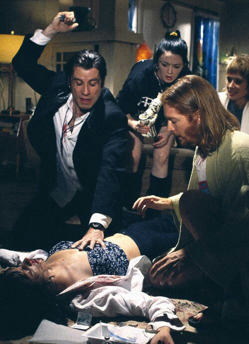

Jules Winnfield (Samuel L. Jackson, Jackie Brown) y Vincent Vega (John Travolta, Grease) son dos asesinos a sueldo que trabajan a las órdenes del temido gángster Marsellus Wallace (Ving Rhames, Amanecer de los muertos), quien les encarga la importante misión de recuperar su misterioso maletín, que ha sido robado. Ahí empezarán todos sus problemas.
Los dos criminales son polos opuestos que deberán trabajar juntos para cumplir su cometido. De forma paralela, Vincent tendrá que hacerse cargo de Mia Wallace (Uma Thurman, Kill Bill), la peculiar novia de su jefe, a petición del mismo, mientras él pasa unos días fuera de la ciudad. Su compañero Jules le recomienda que vaya con cautela, pues la atractiva mujer le puede meter en problemas. Mientras, el boxeador Butch Coolidge (Bruce Willis, El sexto sentido) debe perder una importante pelea, pues ha sido sobornado por Wallace para participar en este combate amañado, y la pareja formada por Pumpkin/Ringo (Tim Roth, Reservoir Dogs) y Honey Bunny/Yolanda (Amanda Plummer, Mi vida sin mí) decidirá atracar un establecimiento debido a su lamentable situación laboral.
Esta película de culto escrita y dirigida por Quentin Tarantino (Reservoir Dogs, Malditos bastardos) se convirtió en todo un icono de la década de los noventa y en uno de los filmes mejor valorados de la historia. Además de los mencionados, cuenta en su reparto con Harvey Keitel (El gran hotel Budapest), Maria de Medeiros (Mi vida sin mí), Eric Stoltz (El efecto mariposa), Rosanna Arquette (El gran azul) y Christopher Walken (Atrápame si puedes).